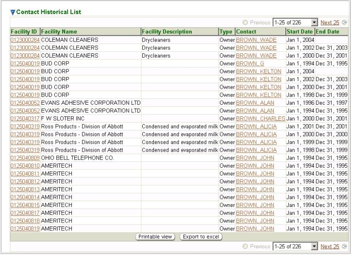

Previous Topic
Next Topic
| Facilities |
Previous Topic |
Next Topic |
The Contact History Search page, available from the Facilities tab, is a search page that gives you the ability to run a query to obtain HISTORICAL facility contact information for one, or more, facilities contained in the system. This search does not return CURRENT profile contact information for a facility. To search current profile contact information use the Facilities Search second-level menu under the Facilities tab. The Search Criteria and Result List for this search are described below.
This topic contains the following sections:
You may search for HISTORICAL facility contact information on the basis of any or all of the criteria listed below.
After you complete the criteria for the search you want, and
click
on  ,
the system searches all of the historical records for all the
facilities stored in its database, selects the ones that meet ALL of
the criteria you have specified, and returns summary information about
those facility contact(s) in a datagrid. The datagrid below is the
result of a search submitted with search criteria specified to select
all contacts with the Last
Name of Brown
that are an Owner.
,
the system searches all of the historical records for all the
facilities stored in its database, selects the ones that meet ALL of
the criteria you have specified, and returns summary information about
those facility contact(s) in a datagrid. The datagrid below is the
result of a search submitted with search criteria specified to select
all contacts with the Last
Name of Brown
that are an Owner.

Contact History Search Results Datagrid
The summary data returned includes columns providing Facility ID, Facility Name, Facility Description, Type, Contact, Start Date and End Date. The Start Date and End Date are in reference to the start and end period for the contact person’s role in the HISTORICAL Facility Profile.
Note that the data in the Facility ID and Contact columns in the datagrid are a hyperlink. If you click on a Facility ID in the datagrid, the system will take you to the CURRENT Facility Detail screen for the facility the contact is/was associated with that the link you selected references. If you click on a Contact in the datagrid, the system will open the Contact Detail pop-up screen for the contact that the link you selected references.
Copyright © 1996, 2004, Oracle. All rights reserved.